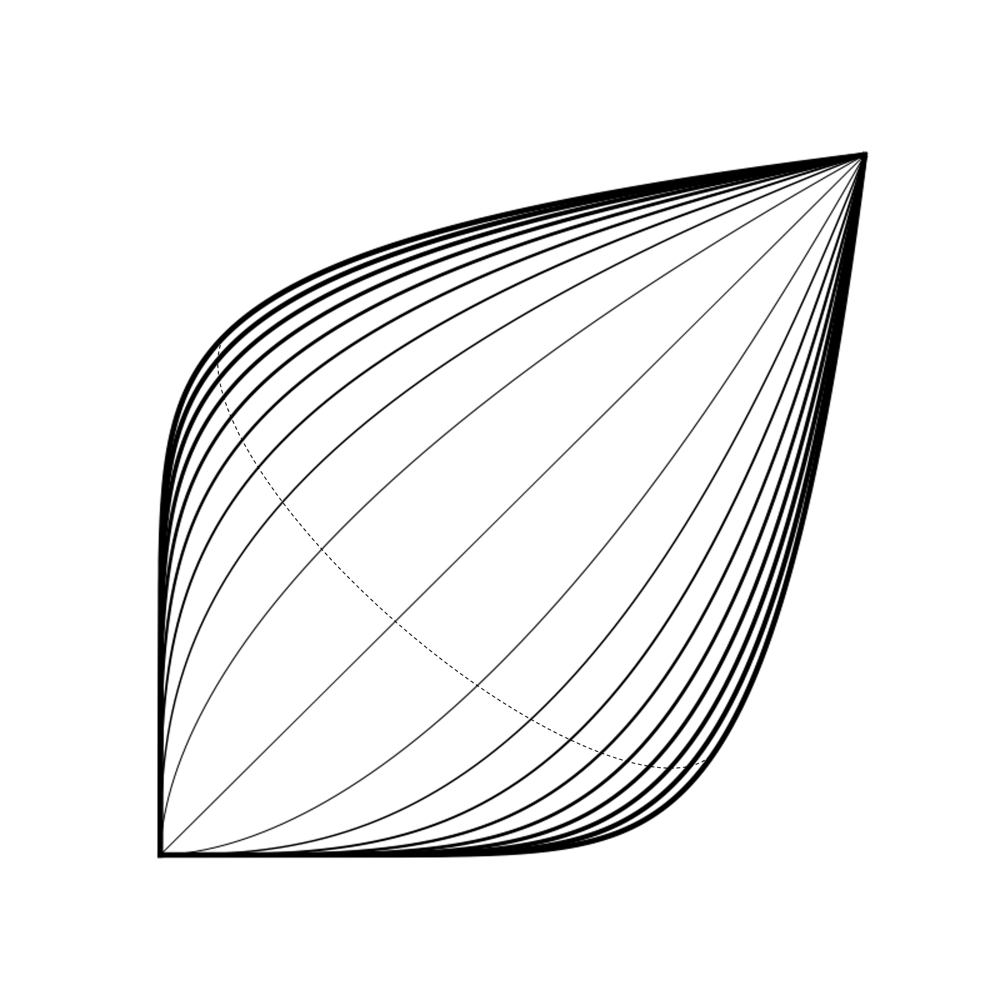
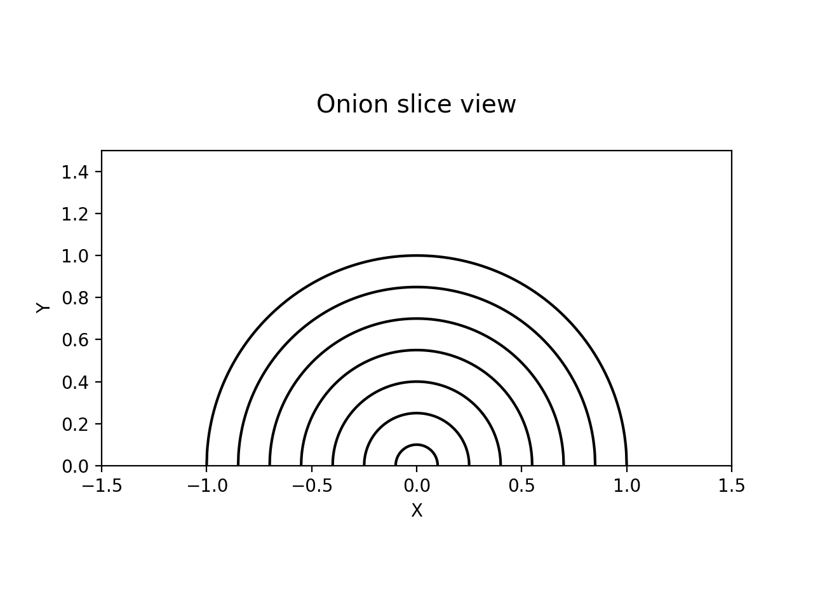
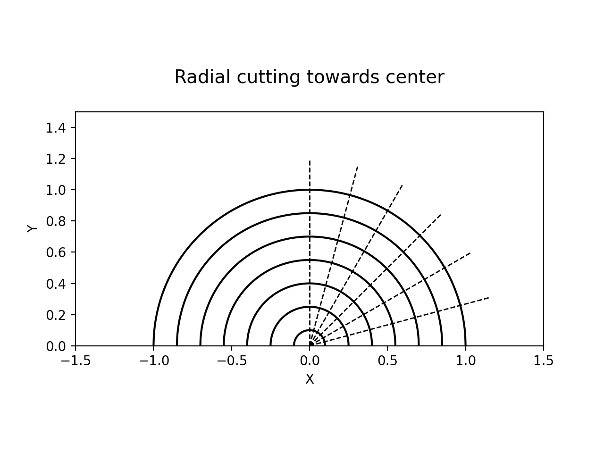
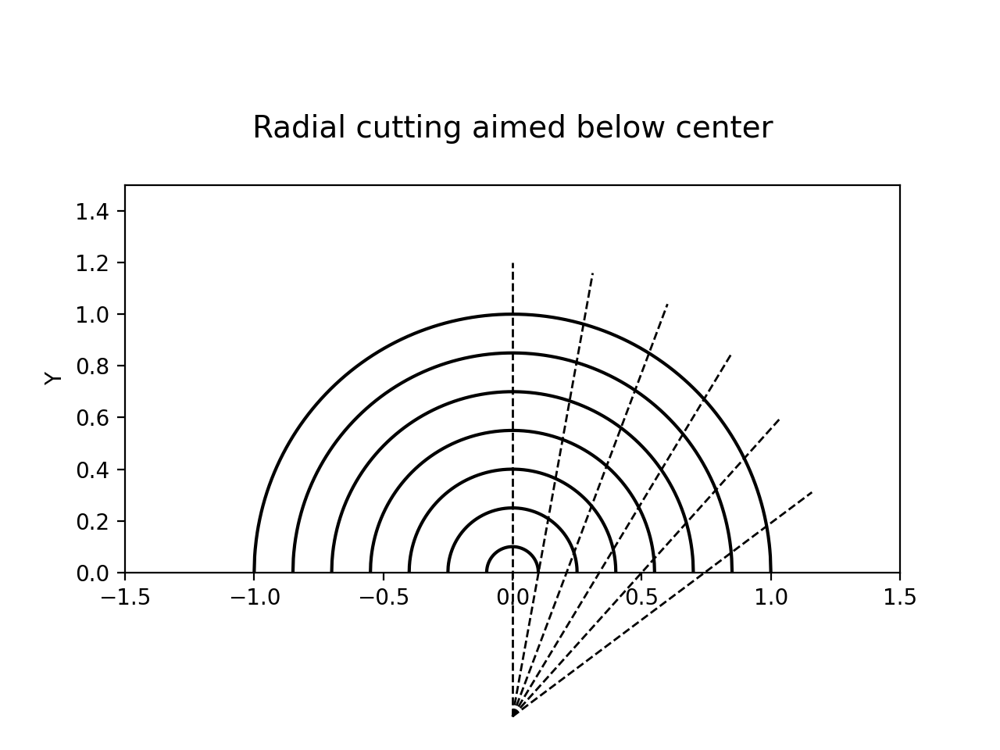

Onion slicing digression
Ever found yourself standing in the kitchen, staring at an onion like it is some sort of Rubik's cube? Me too. Today we are digressing deep into the world of onion slicing.

Obviously, there is more than one way to slice the onion. The question is, however, what is the best way of doing so? As it turns out, I am not the only person that thought about this. There exist many fellow onion slicing enthusiasts, that have already tackled this qustion. Some with less [1] and some with more [2, 3, 4] rigorous methods. Did you know that there exists an onion constant? To me, this was big news, and all I needed to know that I want to reproduce some of the interesting results I found about onion slicing. Please find at the bottom of the blogpost all the references I used to recreate this onion experient.

To start, select a fresh onion and trim off the root and stem ends. Cut the onion in half horizontally, exposing the layers within. This cross-sectional view will serve as your guide as you navigate the slicing process, helping you achieve uniformity in your cuts.

The vertical cutting method is perhaps the most common approach to onion slicing. It involves making vertical cuts perpendicular to the cutting board, followed by horizontal cuts parallel to the board. While this method produces reasonably even dices, it may result in slight variations in size due to the natural curvature of the onion layers.

The radial cutting method aims to overcome the limitations of the vertical approach. With radial slicing, the onion is halved and then sliced radially from the center to the outer edge. This method allows for more consistent dicing, as the cuts follow the natural layers of the onion, resulting in more evenly sized pieces.

For the ultimate onion dicing perfection, many swear by the method of radial cuts aimed below the center [2, 3, 4]. In this approach, the onion is halved and then sliced radially, but with a crucial twist: the knife is angled slightly downward, aiming below the center of the onion. This subtle adjustment ensures that each slice captures uniform portions of the onion layers, yielding impeccably even dices.
But here's where it gets interesting. According to culinary research [2], the ideal angle for the knife when using the method of radial cuts aimed below the center corresponds to an onion constant of approximately 0.55730669298566. This number represents the percentage of the onion's radius you should aim below the center, providing the most evenly cut onion dices.
Materials
The code is available here.
Literature
[1] Maximilian Knabe. Wie schneide ich eine Zwiebel. Link.
[2] Dylan Poulsen. A solution to the Onion Problem. Link.
[3] J. Kenji López. Cutting onions. Link.
[4] Ethan Chlebowski. What's the best way to dice an onion. Link.
Institute of
Environmental Systems Sciences
Merangasse 18,
8010 Graz
Environmental Systems Sciences
Merangasse 18,
8010 Graz
daniel.reisinger@uni-graz.at